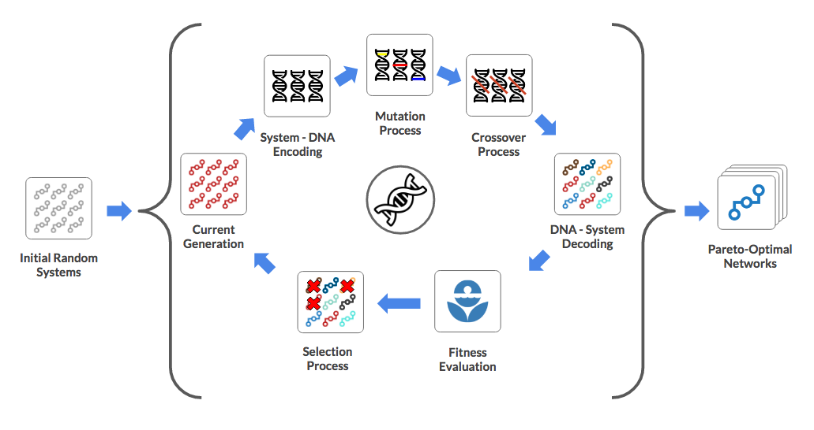
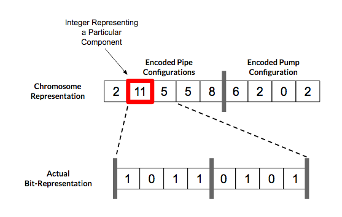
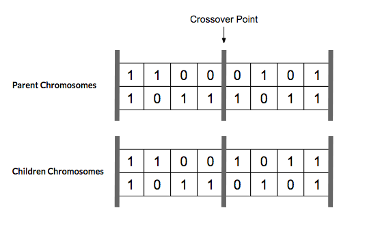

This Part II of my blogpost on the application that helps with optimizing water supply networks using genetic algorithm. You can read Part I here.
The application is written in C/C++.
Project Code on: GitHub
Genetic Algorithm
Genetic algorithm is a method for optimization process that is inspired by natural selection. Individual solutions are encoded into "DNA" which are repeatedly mutated, reproduced and selected for "fitness" based on system performance.

Initialization
A randomize set of configurations are used to fill the initial population.
Encoding
 Possible choices of components of the system are represented as integers. Bit representation of these integers are concatenated and represents a configuration's "DNA". This encoding process enables the mimicking of the biological mutation and reproduction process.
Mutation
In the mutation process, random bits of each configuration's encoded "DNA" are "mutated" or flipped to create new variations of configurations. These small, random variation is intended to explore the solution space in an incremental manner.
Reproduction / Crossover
In the reproduction process, configurations that have high "fitness" scores are paired and their encoded DNA are merged to create a new pair of configurations. A simple single-point cross-over approach, where the encoded bits are swapped at after a pivot point, is used.

Decoding & Fitness Evaluation
The newly mutated and reproduced population is decoded from their DNA representations into system configuration. These configurations are then evaluated for performance (pressure, flow, pump utilization, etc) as well as construction and operating costs using the EPANET network analysis toolkit and the cost calculation module. Each individual configuration is then assigned a "rank" according to their performance.
A crucial difference between standard GA and the current multi-objective GA approaches are the ranking process. Multi-objective GA ranks individual solutions based on their pareto-optimality as oppose to an individual performance metric. With this approach, multiple configurations can have the same "rank".
Population Culling
During the reproduction / crossover process, the total population is effectively doubled. In order to maintain the constant population numbers, system configurations with low fitness scores are removed.
New Generation
Each mutate-reproduce-cull cycle represents a new generation of the population of configurations. The process will then repeat until the required number of generations is reached (or a set of performance criteria are satisfied).
Results
After a sufficient number of generations, we should have identified a set of close-to-pareto-optimum solutions. Designers and decision makers can then evaluate the performance and cost tradeoffs between these limited set of potential configurations.